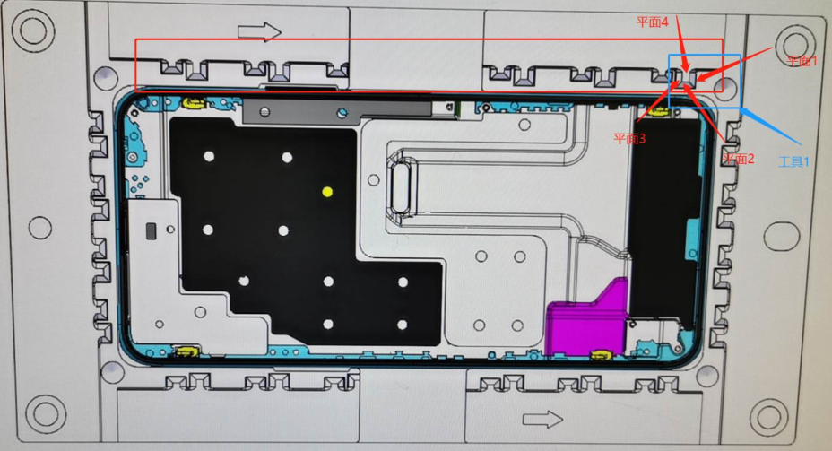
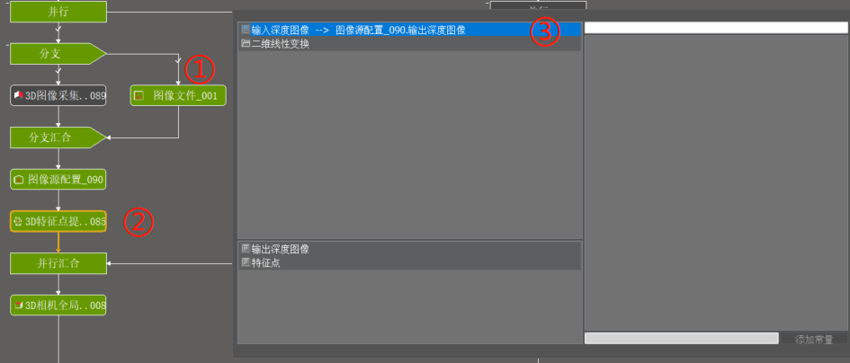
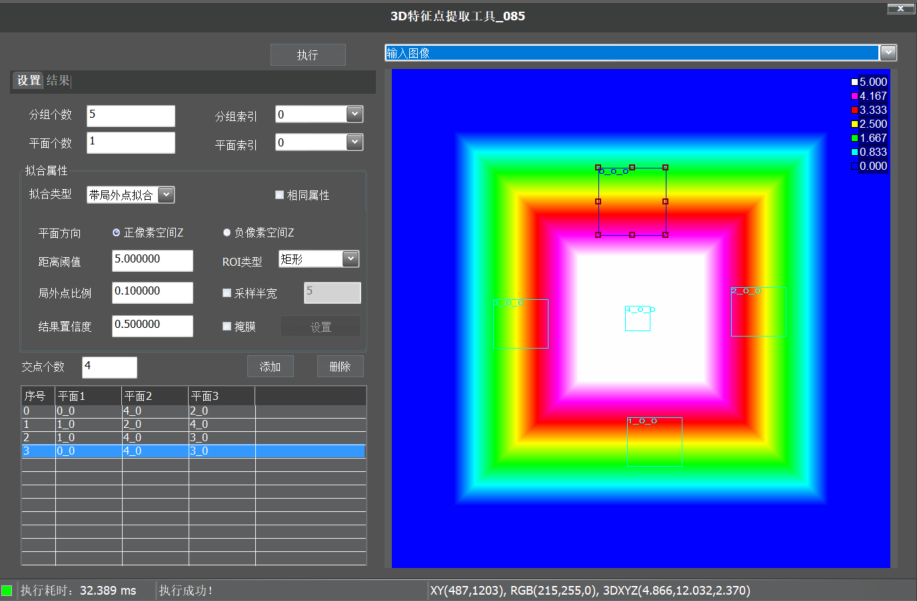
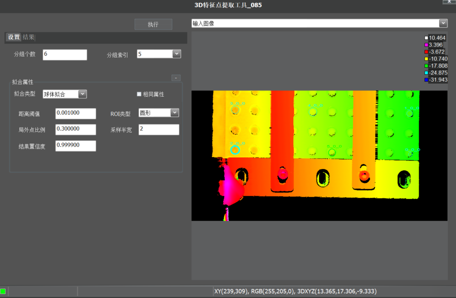
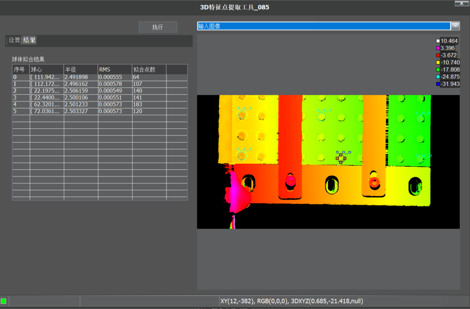
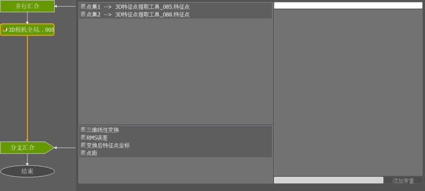

Trích xuất điểm đặc trưng 3D
1. Tổng quan chức năng
Theo loại điểm đặc trưng, có thể là điểm giao từ nhiều mặt phẳng, cũng có thể là điểm đặc trưng thu được bằng cách fitting hình cầu, từ đó lấy tọa độ tập điểm trong hệ tọa độ camera.
2. Tình huống ứng dụng
Trong sản xuất công nghiệp, ứng dụng dẫn hướng 3D rất phổ biến, ví dụ như dẫn hướng bơm keo trong không gian lập thể, robot gắp các linh kiện không nằm trên cùng một mặt phẳng, v.v., đều sẽ liên quan đến thông tin không gian ba chiều, khi đó cần có kỹ thuật hiệu chuẩn tương ứng để chuyển đổi hệ tọa độ camera sang hệ tọa độ thế giới. Khi hiệu chuẩn, cần biết tập điểm trong hệ tọa độ camera và tập điểm tương ứng trong hệ tọa độ thế giới, thông qua hai tập điểm này để tính toán quan hệ biến đổi tuyến tính 3D giữa hệ tọa độ camera và hệ tọa độ thế giới. Tọa độ tập điểm trong hệ tọa độ thế giới thường do nhà sản xuất vật chuẩn xác định và là dữ liệu đã biết, còn tọa độ tập điểm trong hệ tọa độ camera thì có thể lấy thông qua công cụ giao điểm nhiều mặt phẳng.
Như hình minh họa, trong khung màu xanh là một đặc trưng hiệu chuẩn, thông qua bốn mặt phẳng trong hình có thể thu được nhiều giao điểm, trong toàn bộ sản phẩm có nhiều đặc trưng hiệu chuẩn, thông qua các đặc trưng hiệu chuẩn này và công cụ giao điểm nhiều mặt phẳng, có thể thu được tọa độ tập điểm trong hệ tọa độ camera.

3. Hướng dẫn sử dụng
Thêm công cụ, tải ảnh

Thiết lập thuộc tính fitting, số lượng nhóm, chỉ số nhóm
- Loại fitting là fitting theo khoảng hoặc fitting có điểm ngoại lai
- Step 1 Dựa theo số lượng nhóm, số lượng mặt phẳng để thêm ROI cần thiết trên ảnh độ sâu đầu vào;
- Step 2 Dựa theo loại fitting để chọn tham số fitting tương ứng, đảm bảo hiệu quả fitting;
- Step 3 Dựa theo số lượng giao điểm cần thiết, thêm mặt phẳng;
- Step 4 Chọn số thứ tự mặt phẳng mong muốn trong danh sách

- Loại fitting là fitting hình cầu
- Step 1 Dựa theo số lượng nhóm để thêm ROI cần thiết trên ảnh độ sâu đầu vào;
- Step 2 Dựa theo loại fitting để chọn tham số fitting tương ứng, đảm bảo hiệu quả fitting;

Xem kết quả

Sử dụng kết quả trích xuất điểm đặc trưng làm tập điểm đầu vào cho các công cụ như hiệu chuẩn toàn cục camera 3D

5. Câu hỏi thường gặp
| Mô tả hiện tượng |
Cách xử lý |
| Số lượng mặt phẳng và chỉ số mặt phẳng biến mất |
Chuyển sang chế độ fitting mặt phẳng, sẽ xuất hiện lại |
| Khi fitting mặt phẳng không lấy được điểm đặc trưng |
Kiểm tra xem chỉ số mặt phẳng được chọn trong danh sách có tương ứng hay không |
| Fitting hình cầu không fit được tâm cầu |
Ban đầu hãy nới rộng ngưỡng khoảng cách |
6. Mô tả tham số
Tham số đầu vào
| Tên tham số |
Mô tả tham số |
| Ảnh độ sâu đầu vào |
Ảnh độ sâu đầu vào dùng để trích xuất điểm đặc trưng. |
Tham số đầu ra
| Tên tham số |
Mô tả tham số |
| Ảnh độ sâu đầu ra |
Ảnh độ sâu sau khi trích xuất điểm đặc trưng. |
| Điểm đặc trưng |
Tọa độ điểm đặc trưng |
7. Project mẫu
Tham khảo “\Samples\Công cụ trích xuất điểm đặc trưng 3D.gvp”.